2 Basil
2/248｜2025/12/06
29RRN
多了哪些牌
 +1
+1 +1
+1 +1
+1 +1
+1 +1
+1少了哪些牌
 -3
-3 -2
-2 主BP01-015/EBD01-015/ETD03-008/PR-003/PR-223：自然の導き主卡组 × 3
主BP01-015/EBD01-015/ETD03-008/PR-003/PR-223：自然の導き主卡组 × 3 主BP04-010/BP04-P02：小さな勇士・スクナ主卡组 × 3
主BP04-010/BP04-P02：小さな勇士・スクナ主卡组 × 3 主BP11-003/BP11-SL03/BP11-U01：優美な猫姉妹・シャム＆シャマ主卡组 × 3主BP13-001/BP13-SL01/BP13-U01：宿命の狐火・セッカ主卡组 × 2主BP13-008/PR-360：九尾の決意主卡组 × 1
主BP11-003/BP11-SL03/BP11-U01：優美な猫姉妹・シャム＆シャマ主卡组 × 3主BP13-001/BP13-SL01/BP13-U01：宿命の狐火・セッカ主卡组 × 2主BP13-008/PR-360：九尾の決意主卡组 × 1 主BP17-001/BP17-SL01/BP17-U01：深緑の弓使い・アリサ主卡组 × 3
主BP17-001/BP17-SL01/BP17-U01：深緑の弓使い・アリサ主卡组 × 3 主BP18-007/BP18-P03：アクティブエルフ・メイ主卡组 × 3
主BP18-007/BP18-P03：アクティブエルフ・メイ主卡组 × 3 主BP18-019：対空射撃主卡组 × 2
主BP18-019：対空射撃主卡组 × 2 主BP05-109/PR-128/SP01-051/SP01-SL51：爆砕の傭兵・フィーナ主卡组 × 3
主BP05-109/PR-128/SP01-051/SP01-SL51：爆砕の傭兵・フィーナ主卡组 × 3 主BP10-005/PR-483：マドロスエルフ主卡组 × 3
主BP10-005/PR-483：マドロスエルフ主卡组 × 3 主SP01-045/SP01-SL45/SP01-SP30/SP01-SP31/SP01-U28：不思議な青空・アリス主卡组 × 3主BP16-118/PR-508：迸る光明・アポロン主卡组 × 3
主SP01-045/SP01-SL45/SP01-SP30/SP01-SP31/SP01-U28：不思議な青空・アリス主卡组 × 3主BP16-118/PR-508：迸る光明・アポロン主卡组 × 3 主ECP02-004/ECP02-SL04：〔渚の花嫁〕新田美波主卡组 × 3
主ECP02-004/ECP02-SL04：〔渚の花嫁〕新田美波主卡组 × 3 主BP15-004/BP15-SL04/PR-394：凍土の女王・ピアシィ主卡组 × 3
主BP15-004/BP15-SL04/PR-394：凍土の女王・ピアシィ主卡组 × 3 主CP02-006/CP02-P03/CP02-SP02/CP02-U02/PR-435：アナスタシア主卡组 × 2
主CP02-006/CP02-P03/CP02-SP02/CP02-U02/PR-435：アナスタシア主卡组 × 2 进BP04-011/BP04-P03：小さな勇士・スクナ进化 × 3进BP10-006/PR-484：マドロスエルフ进化 × 2进BP13-002/BP13-SL02/BP13-SP01/BP18-SP03：九火石炎・セッカ进化 × 1
进BP04-011/BP04-P03：小さな勇士・スクナ进化 × 3进BP10-006/PR-484：マドロスエルフ进化 × 2进BP13-002/BP13-SL02/BP13-SP01/BP18-SP03：九火石炎・セッカ进化 × 1 进BP15-005/BP15-SL05/PR-395：凍土の女王・ピアシィ进化 × 2进BP16-119：迸る光明・アポロン进化 × 2+1+1+1+1+1-3-2+1+1+1-1-1-1
进BP15-005/BP15-SL05/PR-395：凍土の女王・ピアシィ进化 × 2进BP16-119：迸る光明・アポロン进化 × 2+1+1+1+1+1-3-2+1+1+1-1-1-1 +3
+3 +3
+3 +3
+3 +3
+3 +3
+3 +2
+2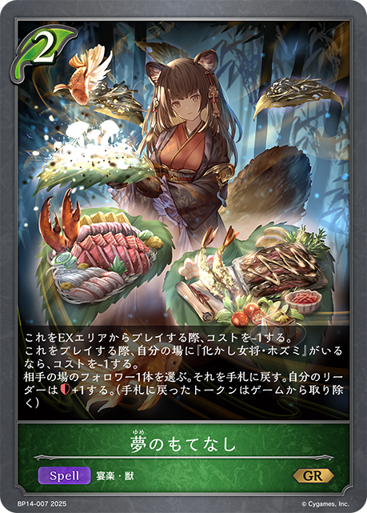
+2 +2+1+1-3-3-3-3-3-3-2-2-1+3
+2+1+1-3-3-3-3-3-3-2-2-1+3 +2
+2 +2+1+1
+2+1+1 +1+1-3-3-2-2-1+3+1+1-3-2+1+1+1+1+1-3-2+3+2+2+1+1-3-2-2-1-1+3+3+3+2+2+2+2+1+1+1-3-3-3-3-3-2-2-1+3+3+3+3+2+1+1+1-3-3-3-3-2-1-1-1+1+1-1-1
+1+1-3-3-2-2-1+3+1+1-3-2+1+1+1+1+1-3-2+3+2+2+1+1-3-2-2-1-1+3+3+3+2+2+2+2+1+1+1-3-3-3-3-3-2-2-1+3+3+3+3+2+1+1+1-3-3-3-3-2-1-1-1+1+1-1-1 +2+2
+2+2 +1-2-1-1-1+1+1+1+1+1-3-2+2
+1-2-1-1-1+1+1+1+1+1-3-2+2 +2+1+1+1+1-3-2-1-1-1+3+2+2+1+1+1-3-2-2-1-1-1+2+2+1+1-3-2-1+3+2+2+1+1+1-3-2-2-1-1-1+3+3+3+3+2+1+1+1-3-3-3-3-2-1-1-1
+2+1+1+1+1-3-2-1-1-1+3+2+2+1+1+1-3-2-2-1-1-1+2+2+1+1-3-2-1+3+2+2+1+1+1-3-2-2-1-1-1+3+3+3+3+2+1+1+1-3-3-3-3-2-1-1-1 +3
+3 +3
+3 +2+2
+2+2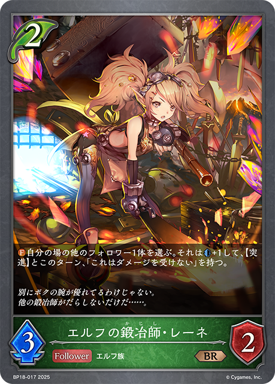
+2+1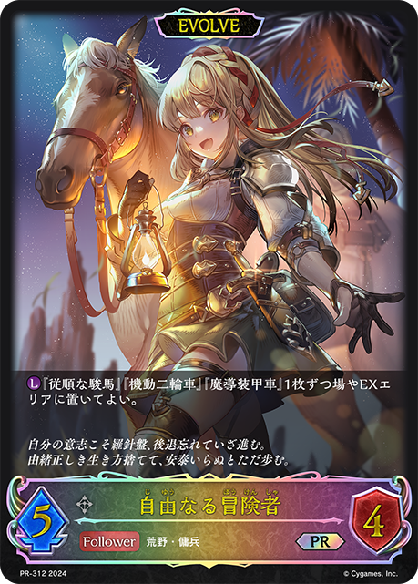
+1-3-3-2-2-1-1-1-1 +3+2+1
+3+2+1 +1+1-3-1-1-1-1-1+1+1+1-1-1-1+1+1-1-1+2+2+1+1+1-3-2-1-1+1-1+3
+1+1-3-1-1-1-1-1+1+1+1-1-1-1+1+1-1-1+2+2+1+1+1-3-2-1-1+1-1+3 +3+3+3+2+1+1+1+1+1
+3+3+3+2+1+1+1+1+1 +1+1-3-3-3-3-3-2-2-1-1+2+1+1+1+1-3-2-1+3+2+2+1+1+1-3-2-2-1-1-1+3+2+2+1+1-3-2-2-1-1+2+1+1+1-3-2+1+1+1+1+1-3-2+3+2
+1+1-3-3-3-3-3-2-2-1-1+2+1+1+1+1-3-2-1+3+2+2+1+1+1-3-2-2-1-1-1+3+2+2+1+1-3-2-2-1-1+2+1+1+1-3-2+1+1+1+1+1-3-2+3+2 +2+1
+2+1 +1+1-3-2-2-1-1-1+3+3+2+2+1+1-3-3-2-2-1-1+2+2+2+1+1-3-2-1-1-1+3+2+2
+1+1-3-2-2-1-1-1+3+3+2+2+1+1-3-3-2-2-1-1+2+2+2+1+1-3-2-1-1-1+3+2+2 +1
+1 +1-3-2-2-1-1+3+3+2+2+1+1-3-3-2-2-1-1+3+2+2+1+1+1-3-2-2-1-1-1+3+2+2+1+1+1-3-2-2-1-1-1+3+2+2+1+1-3-2-2-1-1+1+1-1-1+3+3+3+3+2+1-3-3-3-3-2-1+2
+1-3-2-2-1-1+3+3+2+2+1+1-3-3-2-2-1-1+3+2+2+1+1+1-3-2-2-1-1-1+3+2+2+1+1+1-3-2-2-1-1-1+3+2+2+1+1-3-2-2-1-1+1+1-1-1+3+3+3+3+2+1-3-3-3-3-2-1+2 +2+2+1+1+1-3-3-2-1+2+2+1+1-3-2-1+1+1-1-1+2+1+1+1-1-1-1-1-1+1-1+1+1-1-1+2+1+1-1-1-1-1+2+2+1+1-3-2+1+1-1-1+3+2+2+1+1+1-3-2-2-1-1-1+2+2+1+1-3-1-1-1+2+1+1-2-1-1+1+1-1-1+2+1-1-1-1+3+2+2+1-3-3-2+2+1+1+1-3-2+2+1+1+1-3-2+1+1+1-2-1+2+1+1+1+1-3-2-1+1-1+3+3+3+3+2+2+2+1+1+1+1-3-3-3-3-3-3-2-2+3+1+1-2-1-1-1+3+2+1+1+1-3-2-2-1+2+2+2+1+1+1-3-3-2-1+2+2+1+1+1-2-1-1-1-1-1+2+2+1+1+1+1+1-3-3-2-1+2+1+1+1+1-3-2-1+1+1+1-1-1-1+2+1+1+1-3-2+3+2+2+1+1-3-2-2-1-1+3+2+2+1+1+1-3-2-2-1-1-1+1+1-2+1+1-2+3+3+3+3+2+1+1+1-3-3-3-3-2-1-1-1+3+2+2+1+1+1-3-2-2-1-1-1+1+1+1+1+1-3-2+3+3+3+2+1+1+1-3-3-2-2-1-1-1-1+2
+2+2+1+1+1-3-3-2-1+2+2+1+1-3-2-1+1+1-1-1+2+1+1+1-1-1-1-1-1+1-1+1+1-1-1+2+1+1-1-1-1-1+2+2+1+1-3-2+1+1-1-1+3+2+2+1+1+1-3-2-2-1-1-1+2+2+1+1-3-1-1-1+2+1+1-2-1-1+1+1-1-1+2+1-1-1-1+3+2+2+1-3-3-2+2+1+1+1-3-2+2+1+1+1-3-2+1+1+1-2-1+2+1+1+1+1-3-2-1+1-1+3+3+3+3+2+2+2+1+1+1+1-3-3-3-3-3-3-2-2+3+1+1-2-1-1-1+3+2+1+1+1-3-2-2-1+2+2+2+1+1+1-3-3-2-1+2+2+1+1+1-2-1-1-1-1-1+2+2+1+1+1+1+1-3-3-2-1+2+1+1+1+1-3-2-1+1+1+1-1-1-1+2+1+1+1-3-2+3+2+2+1+1-3-2-2-1-1+3+2+2+1+1+1-3-2-2-1-1-1+1+1-2+1+1-2+3+3+3+3+2+1+1+1-3-3-3-3-2-1-1-1+3+2+2+1+1+1-3-2-2-1-1-1+1+1+1+1+1-3-2+3+3+3+2+1+1+1-3-3-2-2-1-1-1-1+2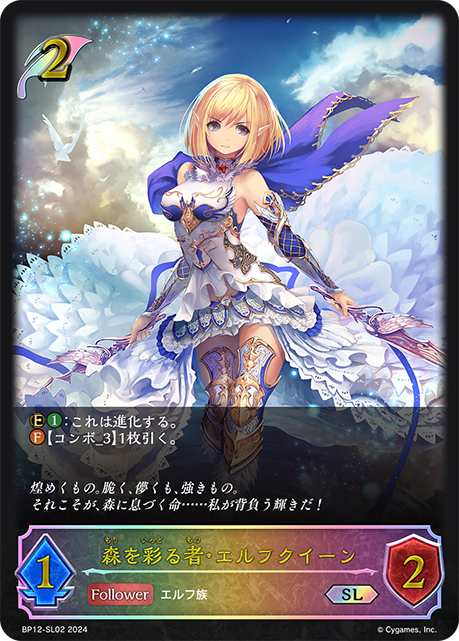
+2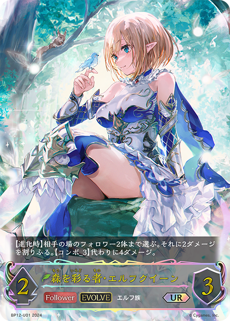
+1+1-3-2-1+2+1+1+1-3-2+3+3+3+3+2+1+1+1-3-3-3-3-2-1-1-1+1+1-2+3+2+1-3-2-1+2+2+1+1+1-3-2-1-1+2+1+1-2-1-1+3+2+2+1+1+1-3-2-2-1-1-1+3+2+2+1+1+1-3-2-2-1-1-1+2+1+1+1+1-3-2-1+2+1+1+1+1-3-2-1+2+1+1+1-3-2+3+3+2+1+1+1-3-2-2-2-1-1+3+2+1+1-3-2-2+1+1+1-2-1+1+1+1+1-1-1-1-1+1-1+1+1-1-1+3+1+1-2-1-1-1+2+1+1+1+1-3-1-1-1+3+1+1+1+1-2-2-1-1-1+3+2+2+1+1-3-2-2-1-1+2+1+1+1-3-2+2+2+1+1-3-2-1+1+1-1-1+1+1+1+1+1-3-2+3+2+2+1+1+1-3-2-2-1-1-1 +3+2
+3+2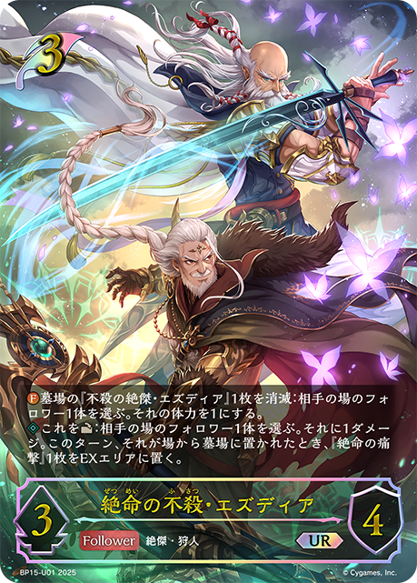
+2 +1+1+1-3-3-2-1-1+2+1+1+1+1-3-2-1+1-1+3+3+2+2+1-3-2-2-1-1-1-1+3+3+2+1+1-3-2-2-1-1-1+2+2+1+1+1-2-1-1-1-1-1+2+1+1+1-3-2+3+2+1+1-1-1-1-1-1-1-1
+1+1+1-3-3-2-1-1+2+1+1+1+1-3-2-1+1-1+3+3+2+2+1-3-2-2-1-1-1-1+3+3+2+1+1-3-2-2-1-1-1+2+2+1+1+1-2-1-1-1-1-1+2+1+1+1-3-2+3+2+1+1-1-1-1-1-1-1-1 +3
+3 +2+1+1+1+1-3-2-2-1-1+3+2+2+1+1+1-3-3-2-1-1+3+2+2+1+1+1-3-2-2-1-1-1+3+2+2+1+1+1-3-2-2-1-1-1+3+2+2+1+1+1-3-2-2-1-1-1+2+1+1+1+1-2-2-1-1+3+1+1+1+1-3-2-1+3+1+1+1-3-2-1+1+1+1-1-1-1+2+1+1+1+1-3-2-1+1+1+1-1-1-1+2+1+1-2-1-1
+2+1+1+1+1-3-2-2-1-1+3+2+2+1+1+1-3-3-2-1-1+3+2+2+1+1+1-3-2-2-1-1-1+3+2+2+1+1+1-3-2-2-1-1-1+3+2+2+1+1+1-3-2-2-1-1-1+2+1+1+1+1-2-2-1-1+3+1+1+1+1-3-2-1+3+1+1+1-3-2-1+1+1+1-1-1-1+2+1+1+1+1-3-2-1+1+1+1-1-1-1+2+1+1-2-1-1 +3
+3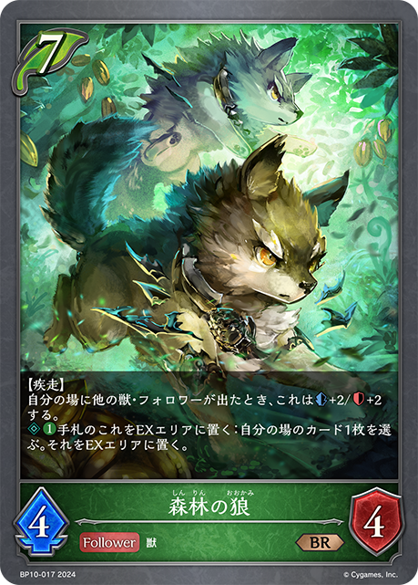
+3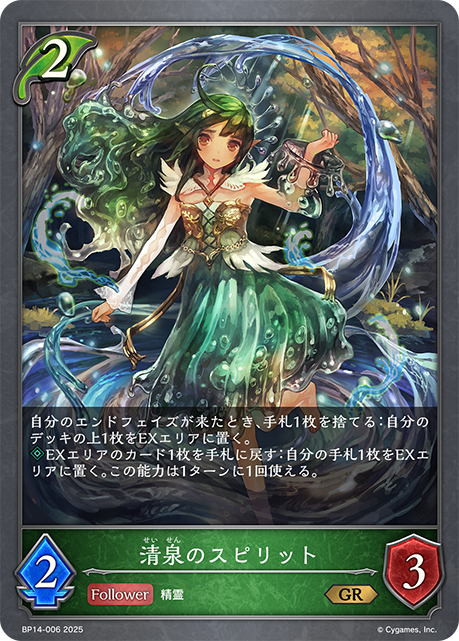
+3+3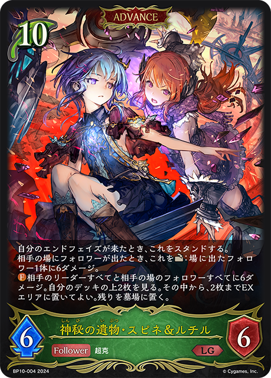
+1+1-3-3-2-2-1-1-1-1+2+1+1+1-3-2+1+1-1-1+2+1+1+1-2-1-1-1+3+2+2+1+1+1-3-2-2-1-1-1+3+2+1+1+1+1 +1-3-2-1-1-1-1-1+3+2+2+1+1+1-3-2-2-1-1-1+1+1-1-1+3+3+3+2+1+1+1-3-3-2-2-1-1-1-1+3+2+2+2+1-3-2-2-1-1-1+3+3+3+2+2+1+1+1+1-3-3-3-3-2-2-1+3+2+1+1+1+1+1-3-2-2-1-1-1+1-1+3+3+3+2+1+1+1-3-3-2-2-1-1-1-1+2
+1-3-2-1-1-1-1-1+3+2+2+1+1+1-3-2-2-1-1-1+1+1-1-1+3+3+3+2+1+1+1-3-3-2-2-1-1-1-1+3+2+2+2+1-3-2-2-1-1-1+3+3+3+2+2+1+1+1+1-3-3-3-3-2-2-1+3+2+1+1+1+1+1-3-2-2-1-1-1+1-1+3+3+3+2+1+1+1-3-3-2-2-1-1-1-1+2 +2
+2 +2+1+1+1-3-2-2-1-1-1+2+1+1+1+1-2-2-1-1
+2+1+1+1-3-2-2-1-1-1+2+1+1+1+1-2-2-1-1 +3
+3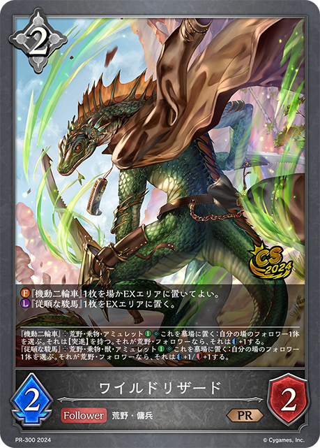
+3 +2+2+1+1
+2+2+1+1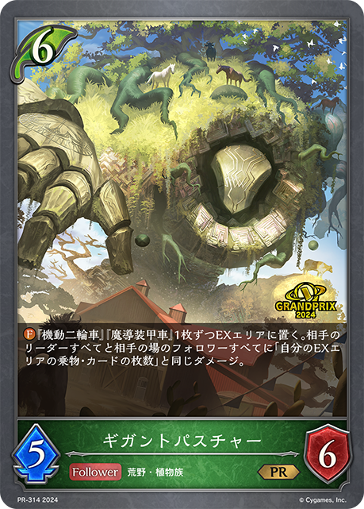
+1-3-3-2-2-2-1+2+1+1+1-3-2+2+1+1+1+1+1-3-2-1-1+2+1+1-1-1-1-1+2+1+1-1-1-1-1+2+1+1-2-1-1+3+3+3+3+2+2+1+1+1+1+1-3-3-3-3-3-2-2-1-1+1+1-1-1+2+1+1+1+1-3-2-1-1+3+3+2+1+1+1-3-2-2-1-1-1-1+2+1+1+1+1 +1+1+1+1-3-2-2-1-1-1+1+1
+1+1+1+1-3-2-2-1-1-1+1+1 +1-2-1+1+1+1-1-1-1+1+1-1-1+1+1-1-1+3+3+3+2+1+1+1-3-3-2-2-1-1-1-1
+1-2-1+1+1+1-1-1-1+1+1-1-1+1+1-1-1+3+3+3+2+1+1+1-3-3-2-2-1-1-1-1 +1+1+1
+1+1+1 +1+1+1-3-2-1+2+2+2+1+1+1+1+1-3-3-2-1-1-1+2+1+1+1-3-2+1+1-1-1+2+1+1+1-3-2+3+3+3+2+2+1+1+1
+1+1+1-3-2-1+2+2+2+1+1+1+1+1-3-3-2-1-1-1+2+1+1+1-3-2+1+1-1-1+2+1+1+1-3-2+3+3+3+2+2+1+1+1 +1-3-3-3-3-2-2-1+2+1+1+1-1-1-1-1-1+2+1+1+1-3-2+2+1+1+1+1-3-2-1+1-1+2+2+1+1+1-3-1-1-1-1+3+2+2+1+1-3-2-2-1-1+2+2+1+1-3-2+2+1+1+1+1-2-1-1-1-1+3+2+2+2+1-3-2-2-1-1-1+2+1+1+1+1-2-1-1-1-1+2+2+2+2+2+1+1-3-3-3-2-1+3+3+2+2+1+1-3-3-2-2-1-1+3+1+1+1-3-2-1+2+2+2+1+1+1-3-2-2-1-1+1+1+1-1-1-1+1+1-1-1+2+2+2+1+1+1-3-3-2-1+3+3+2+1+1+1+1+1-3-3-2-2-1-1-1+2+1+1+1+1-3-2-1+2+2+1+1-3-2-1+1-1+1+1+1-1-1-1+1+1+1-1-1-1+2+1+1-1-1-1-1+1+1-1-1+1-1+3+2+2+1+1+1-3-2-2-1-1-1+2
+1-3-3-3-3-2-2-1+2+1+1+1-1-1-1-1-1+2+1+1+1-3-2+2+1+1+1+1-3-2-1+1-1+2+2+1+1+1-3-1-1-1-1+3+2+2+1+1-3-2-2-1-1+2+2+1+1-3-2+2+1+1+1+1-2-1-1-1-1+3+2+2+2+1-3-2-2-1-1-1+2+1+1+1+1-2-1-1-1-1+2+2+2+2+2+1+1-3-3-3-2-1+3+3+2+2+1+1-3-3-2-2-1-1+3+1+1+1-3-2-1+2+2+2+1+1+1-3-2-2-1-1+1+1+1-1-1-1+1+1-1-1+2+2+2+1+1+1-3-3-2-1+3+3+2+1+1+1+1+1-3-3-2-2-1-1-1+2+1+1+1+1-3-2-1+2+2+1+1-3-2-1+1-1+1+1+1-1-1-1+1+1+1-1-1-1+2+1+1-1-1-1-1+1+1-1-1+1-1+3+2+2+1+1+1-3-2-2-1-1-1+2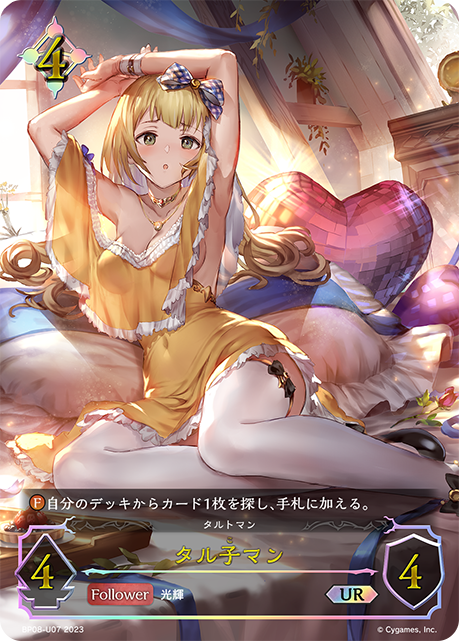
+1+1+1-2-1-1-1+2+2+2+1+1+1-3-2-2-1-1+3+2+2+1+1-3-2-2-1-1+2+2+1+1-2-1-1-1-1+2+1+1-2-1-1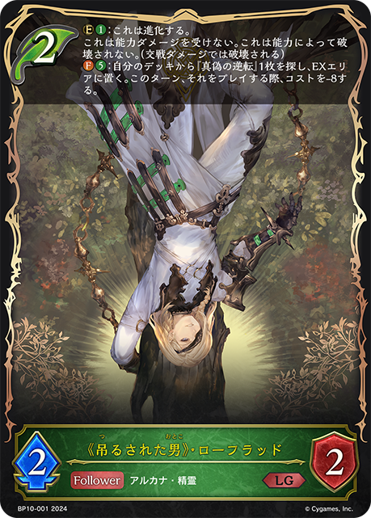
+2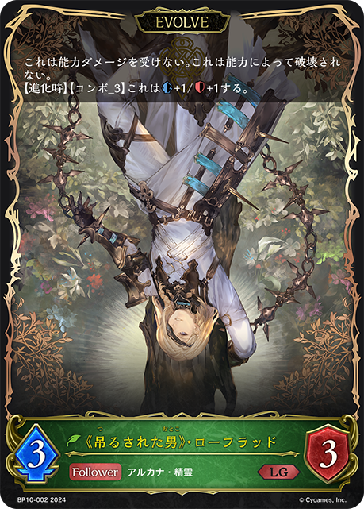
+1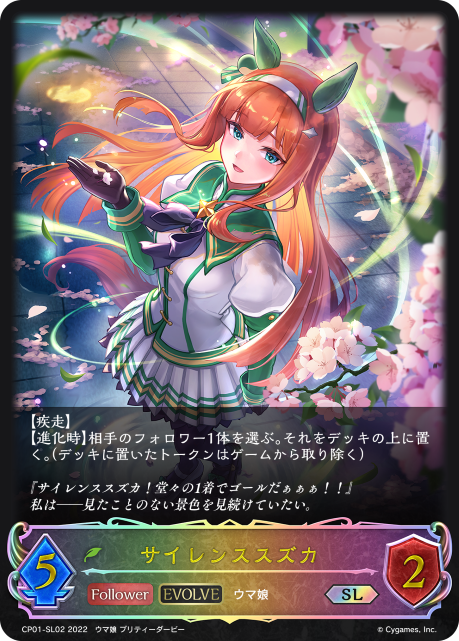
+1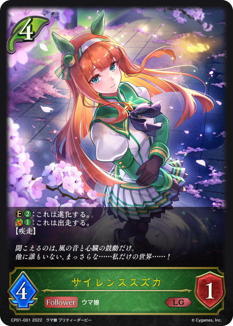
+1-3-2+3+2+2+1+1-3-2-2-1-1+1+1-1-1+1+1-1-1+2+1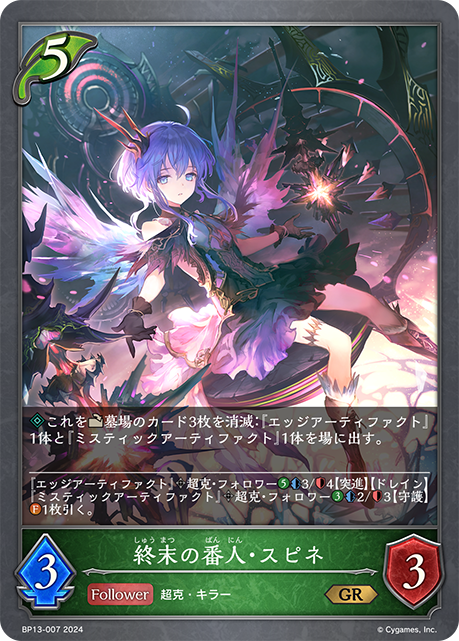
+1+1-3-2+3+3+3+3+3+1+1+1+1+1+1-3-3-3-3-3-2-2-1-1+3+3+2+2+1+1-3-3-2-2-1-1+2+1+1-2-1-1+1+1-1-1+1-2-1-1+3+2+1+1+1+1-3-2-2-1-1+2+2+2+1+1+1-2-1-1-1-1-1-1-1+1-1+1+1-2+3+3+3+2+2+2+1+1-3-3-3-3-2-2-1+2+1+1+1+1-3-2-1+1+1-1-1+1+1-2+3+2+1+1-3-2-1-1+2+2+1+1+1+1-3-2-1-1-1+2+1+1+1 +1-2-1-1-1-1+1+1-1-1+1+1+1+1-2-1-1+2+1+1+1-3-2+3+3+2+1+1-3-2-2-1-1-1+2+1+1-1-1-1-1+2+1+1+1-2-1-1-1+2+1+1-1-1-1-1+1+1+1+1+1-3-2+3+3+3+3+3+2+2+2+1+1-3-3-3-3-3-3-2-2-1+2+2+2+1+1+1+1-3-2-2-1-1-1+3+2+2+1+1+1-3-2-2-1-1-1+1+1-1-1+1+1-1-1+2+2+2+1+1+1-3-2-2-1-1+3+2+2+1+1+1-3-2-2-1-1-1+1+1-1-1+2+2+1
+1-2-1-1-1-1+1+1-1-1+1+1+1+1-2-1-1+2+1+1+1-3-2+3+3+2+1+1-3-2-2-1-1-1+2+1+1-1-1-1-1+2+1+1+1-2-1-1-1+2+1+1-1-1-1-1+1+1+1+1+1-3-2+3+3+3+3+3+2+2+2+1+1-3-3-3-3-3-3-2-2-1+2+2+2+1+1+1+1-3-2-2-1-1-1+3+2+2+1+1+1-3-2-2-1-1-1+1+1-1-1+1+1-1-1+2+2+2+1+1+1-3-2-2-1-1+3+2+2+1+1+1-3-2-2-1-1-1+1+1-1-1+2+2+1 +1+1-3-2-1-1+2+1+1+1+1+1-3-2-1-1+3+2+2+1-3-3-2+2+1+1+1+1-3-2-1+2+2+1+1+1+1-3-2-1-1-1+3
+1+1-3-2-1-1+2+1+1+1+1+1-3-2-1-1+3+2+2+1-3-3-2+2+1+1+1+1-3-2-1+2+2+1+1+1+1-3-2-1-1-1+3 +3+3
+3+3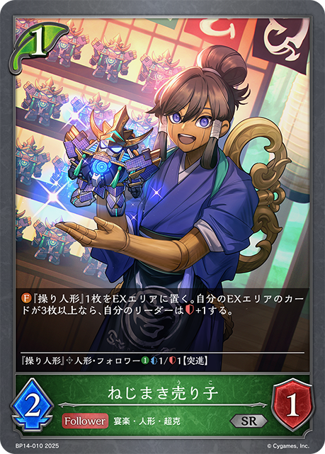
+3+3 +3+2+2+2
+3+2+2+2 +2+1-3-3-3-3-3-2-2-2-2-1-1-1-1+1+1+1-3-2-1-1+3+3+2+2+1+1-3-2-2-1-1-1-1-1+2+2+1+1-3-2+1+1-1-1+2+2+1+1+1+1-3-2-1-1-1+1+1-1-1+2+2+2+1+1+1-3-2-2-1-1+3+3+2+1+1+1-3-2-2-1-1-1-1+2+1+1+1-3-2+2+1+1+1-3-2+1+1+1-1-1-1+3+3+3+3+2+1+1+1-3-3-3-3-2-1-1-1+2+1+1+1-3-2+3+1+1+1-2-1-1-1-1+1+1+1-1-1-1+3+3+3+1+1+1+1+1+1+1-3-3-3-2-2-1-1-1+3+3+2+2+2+1-3-3-2-2-1-1-1+1+1-1-1+1+1+1-1-1-1+2+1+1+1-3-2+3+2+1+1-2-1-1-1-1-1+2+2+2+1+1+1-3-2-2-1-1+2+1+1+1+1-3-1-1-1+3+2+2+1+1+1+1-3-3-2-2-1+2+2+2+1
+2+1-3-3-3-3-3-2-2-2-2-1-1-1-1+1+1+1-3-2-1-1+3+3+2+2+1+1-3-2-2-1-1-1-1-1+2+2+1+1-3-2+1+1-1-1+2+2+1+1+1+1-3-2-1-1-1+1+1-1-1+2+2+2+1+1+1-3-2-2-1-1+3+3+2+1+1+1-3-2-2-1-1-1-1+2+1+1+1-3-2+2+1+1+1-3-2+1+1+1-1-1-1+3+3+3+3+2+1+1+1-3-3-3-3-2-1-1-1+2+1+1+1-3-2+3+1+1+1-2-1-1-1-1+1+1+1-1-1-1+3+3+3+1+1+1+1+1+1+1-3-3-3-2-2-1-1-1+3+3+2+2+2+1-3-3-2-2-1-1-1+1+1-1-1+1+1+1-1-1-1+2+1+1+1-3-2+3+2+1+1-2-1-1-1-1-1+2+2+2+1+1+1-3-2-2-1-1+2+1+1+1+1-3-1-1-1+3+2+2+1+1+1+1-3-3-2-2-1+2+2+2+1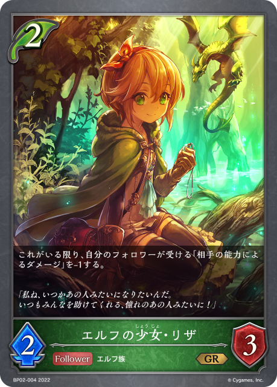
+1+1-3-2-2-1-1+2+1+1+1-3-2+1+1-1-1+1+1-1-1+1+1-1-1+3+2+1-2-1-1-1-1+2+1+1+1+1+1-3-2-1-1+2+1+1+1-3-2+3+2+1+1+1+1+1-3-2-2-1-1-1+1+1-2+3+3+2+2+2-3-2-2-2-1-1-1+3+3+2+1+1-3-2-2-1-1-1+1+1-1-1+1+1-1-1+3+1+1+1-3-2-1+1+1+1+1-3-2-1-1+1+1+1+1+1+1-3-2-1+1+1+1-1-1-1+2+1+1-2-1-1+3+2+2+1+1-3-2-2-1-1+1+1-1-1+2+2+1-3-2+3+2+2+1+1-3-2-2-1-1+2+2+2+1+1+1-3-2-2-1-1+1-1+3+1+1-2-1-1-1+1+1-2+2+2+1+1+1+1-3-2-1-1-1+1+1-2+1+1-1-1+3+2+2+1+1+1-3-2-2-1-1-1+3+2+2+1+1+1-3-2-2-1-1-1+3+2+1+1+1+1+1-3-3-2-1-1+3+1+1+1+1+1-3-3-2+1+1-1-1+1-1+1-1+2+2+1+1-2-1-1-1-1+1-1+2+1+1+1+1+1+1+1+1-3-2-2-1-1-1+2+1+1+1+1-3-2-1-2-2+1+1-1-1+2-1-1+3+1+1+1-2-2-1-1 +2
+2 +2+2+2+1+1-3-2-2-1-1-1+2+1+1-2-1-1+3+3+2+1+1-3-2-2-1-1-1+2+1-1-1-1+3+3+3+2+1+1+1-3-3-3-2-1-1-1
+2+2+2+1+1-3-2-2-1-1-1+2+1+1-2-1-1+3+3+2+1+1-3-2-2-1-1-1+2+1-1-1-1+3+3+3+2+1+1+1-3-3-3-2-1-1-1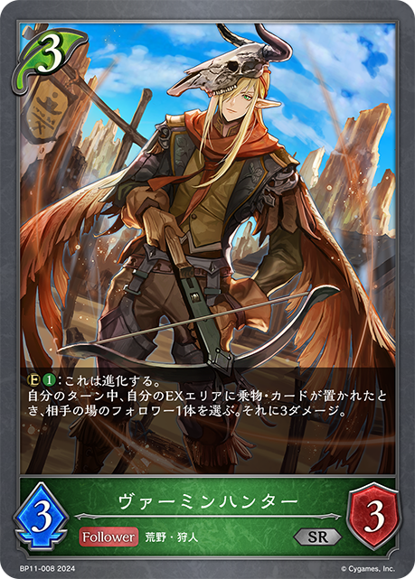
+3+3+3+3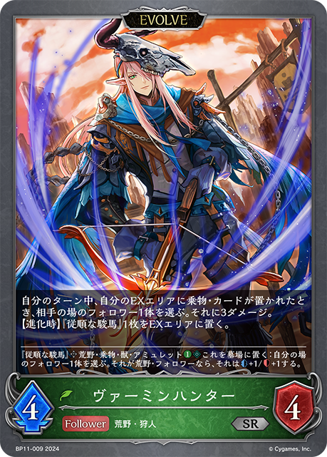
+2+2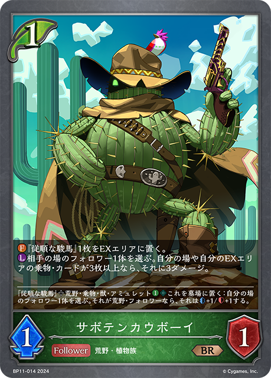
+1-3-3-2-2-2-1-1-1-1-1+3+2+2+1+1-3-2-2-1-1+3+2+2+1+1+1-3-2-2-1-1-1+1-1+3+2+2+1+1-3-2-2-1-1+2+1+1+1+1-3-1-1-1+3+3+2+2+2+1+1-3-3-2-2-1-1-1-1+1+1+1+1+1-3-2+1-1+2+2+1-3-2+2+2+1+1-3-2-1+3+2+1+1+1+1-3-3-2-1+2+1+1+1+1-3-2-1+3+2+2+1+1-3-2-2-1-1+2+2+1+1+1-2-1-1-1-1-1+1+1-1-1+2+2+2+1+1+1-3-2-2-1-1+1+1-2+3+1+1-3-1-1+1+1+1-1-1-1+1+1-1-1+1+1+1+1-1-1-1-1+3+1+1+1-3-2-1+3+3+3+3+2+1+1+1-3-3-3-3-2-1-1-1+3+1+1-2-1-1-1+3+3+2+2+2-3-2-2-2-1-1-1+2+1+1+1+1-2-2-1-1+1+1+1-1-1-1+3+1+1+1-3-2-1+1+1+1-1-1-1+1+1+1-1-1-1+3+3+3+3+3+2+2+2+1+1-3-3-3-3-3-3-2-2-1+2+1+1+1-3-2+3+2+2+1+1+1-3-2-2-1-1-1+3+2+1+1+1+1-3-3-2-1+1-1+1-1+1+1+1+1-1-1-1-1+2+2+1+1-2-1-1-1+3+3+3+2+1+1+1-3-3-2-2-1-1-1-1+2+1+1+1+1-3-2-1+1+1+1-1-1-1+1+1+1+1+1-3-2+1-1+3+2+2+1 +1-3-2-2-1-1+2+1+1-2-1-1+3+1+1-2-1-1-1+3+2+1+1+1+1-3-2-2-1-1+1+1+1+1+1-3-2+3+3+2+2+2+1+1+1+1+1+1-3-3-3-2-2-1-1-1-1-1+1+1-2-1+2+2+1+1+1-3-2-1-1+2+1+1+1+1-2-2-1-1+2+1+1+1+1+1-3-2-1-1+3+3+3+2+2+2+1+1+1-3-3-3-2-2-2-1-1-1+2+1+1+1-3-2+2+1+1+1+1-3-2-1+3+2+2+1+1-3-2-2-1-1+1-1+2+1+1-2-1-1+2-1-1+1+1+1-1-1-1+1+1+1-1-1-1+1+1+1+1-1-1-1-1-3-2+2+2+1-2-1-1-1
+1-3-2-2-1-1+2+1+1-2-1-1+3+1+1-2-1-1-1+3+2+1+1+1+1-3-2-2-1-1+1+1+1+1+1-3-2+3+3+2+2+2+1+1+1+1+1+1-3-3-3-2-2-1-1-1-1-1+1+1-2-1+2+2+1+1+1-3-2-1-1+2+1+1+1+1-2-2-1-1+2+1+1+1+1+1-3-2-1-1+3+3+3+2+2+2+1+1+1-3-3-3-2-2-2-1-1-1+2+1+1+1-3-2+2+1+1+1+1-3-2-1+3+2+2+1+1-3-2-2-1-1+1-1+2+1+1-2-1-1+2-1-1+1+1+1-1-1-1+1+1+1-1-1-1+1+1+1+1-1-1-1-1-3-2+2+2+1-2-1-1-1| 图片 | 平均张数 | 使用率 | 0张比例 | 1张比例 | 2张比例 | 3张比例 |
|---|---|---|---|---|---|---|
|
3.00 | 100.0% | 0.0% | 0.0% | 0.5% | 99.5% |
|
2.96 | 100.0% | 0.0% | 0.0% | 3.9% | 96.1% |
|
2.96 | 99.0% | 1.0% | 0.0% | 1.0% | 98.1% |
|
2.02 | 99.0% | 1.0% | 0.0% | 95.4% | 3.6% |
|
2.96 | 98.5% | 1.5% | 0.0% | 0.0% | 98.5% |
|
2.96 | 98.5% | 1.5% | 0.0% | 0.0% | 98.5% |
|
2.47 | 98.3% | 1.7% | 1.0% | 46.4% | 51.0% |
|
2.72 | 96.4% | 3.6% | 0.2% | 16.5% | 79.6% |
|
2.85 | 95.6% | 4.4% | 0.0% | 1.7% | 93.9% |
|
2.77 | 93.0% | 7.0% | 0.2% | 1.0% | 91.7% |
|
2.36 | 91.7% | 8.3% | 5.8% | 27.2% | 58.7% |
|
2.39 | 85.0% | 15.0% | 0.2% | 15.8% | 68.9% |
|
1.89 | 70.4% | 29.6% | 0.0% | 22.6% | 47.8% |
|
0.98 | 70.4% | 29.6% | 43.9% | 25.7% | 0.7% |
|
1.66 | 60.7% | 39.3% | 1.0% | 14.3% | 45.4% |
|
0.84 | 41.0% | 59.0% | 13.6% | 11.9% | 15.5% |
|
0.32 | 14.8% | 85.2% | 0.2% | 11.9% | 2.7% |
|
0.15 | 12.9% | 87.1% | 11.2% | 1.7% | 0.0% |
|
0.14 | 8.0% | 92.0% | 3.2% | 4.1% | 0.7% |
|
0.19 | 6.6% | 93.4% | 0.0% | 0.5% | 6.1% |
|
0.17 | 6.3% | 93.7% | 0.5% | 0.5% | 5.3% |
|
0.17 | 6.3% | 93.7% | 0.0% | 2.4% | 3.9% |
|
0.14 | 6.3% | 93.7% | 1.5% | 2.2% | 2.7% |
|
0.16 | 6.1% | 93.9% | 1.0% | 0.2% | 4.9% |
|
0.07 | 5.6% | 94.4% | 4.4% | 1.0% | 0.2% |
|
0.06 | 3.6% | 96.4% | 1.9% | 0.7% | 1.0% |
|
0.08 | 3.4% | 96.6% | 0.5% | 0.7% | 2.2% |
|
0.06 | 2.2% | 97.8% | 0.0% | 0.5% | 1.7% |
|
0.05 | 1.9% | 98.1% | 0.0% | 0.5% | 1.5% |
|
0.04 | 1.9% | 98.1% | 0.0% | 1.5% | 0.5% |
| 0.03 | 1.9% | 98.1% | 0.7% | 1.0% | 0.2% | |
|
0.02 | 1.7% | 98.3% | 1.0% | 0.7% | 0.0% |
|
0.03 | 1.5% | 98.5% | 0.5% | 0.2% | 0.7% |
|
0.03 | 1.2% | 98.8% | 0.0% | 0.5% | 0.7% |
|
0.03 | 1.0% | 99.0% | 0.0% | 0.2% | 0.7% |
| 0.02 | 1.0% | 99.0% | 0.0% | 1.0% | 0.0% | |
| 0.02 | 1.0% | 99.0% | 0.0% | 1.0% | 0.0% | |
|
0.01 | 1.0% | 99.0% | 1.0% | 0.0% | 0.0% |
|
0.02 | 0.7% | 99.3% | 0.0% | 0.0% | 0.7% |
|
0.02 | 0.7% | 99.3% | 0.0% | 0.0% | 0.7% |
|
0.02 | 0.7% | 99.3% | 0.2% | 0.0% | 0.5% |
| 0.01 | 0.7% | 99.3% | 0.0% | 0.7% | 0.0% | |
| 0.01 | 0.7% | 99.3% | 0.0% | 0.7% | 0.0% | |
|
0.01 | 0.7% | 99.3% | 0.7% | 0.0% | 0.0% |
| 0.01 | 0.7% | 99.3% | 0.7% | 0.0% | 0.0% | |
| 0.01 | 0.5% | 99.5% | 0.0% | 0.0% | 0.5% | |
| 0.01 | 0.5% | 99.5% | 0.0% | 0.2% | 0.2% | |
|
0.01 | 0.5% | 99.5% | 0.2% | 0.0% | 0.2% |
|
0.01 | 0.5% | 99.5% | 0.0% | 0.5% | 0.0% |
|
0.00 | 0.5% | 99.5% | 0.5% | 0.0% | 0.0% |
|
0.01 | 0.2% | 99.8% | 0.0% | 0.0% | 0.2% |
|
0.01 | 0.2% | 99.8% | 0.0% | 0.0% | 0.2% |
| 0.01 | 0.2% | 99.8% | 0.0% | 0.0% | 0.2% | |
| 0.01 | 0.2% | 99.8% | 0.0% | 0.0% | 0.2% | |
| 0.01 | 0.2% | 99.8% | 0.0% | 0.0% | 0.2% | |
|
0.01 | 0.2% | 99.8% | 0.0% | 0.0% | 0.2% |
|
0.00 | 0.2% | 99.8% | 0.0% | 0.2% | 0.0% |
|
0.00 | 0.2% | 99.8% | 0.0% | 0.2% | 0.0% |
|
0.00 | 0.2% | 99.8% | 0.0% | 0.2% | 0.0% |
|
0.00 | 0.2% | 99.8% | 0.0% | 0.2% | 0.0% |
| 0.00 | 0.2% | 99.8% | 0.2% | 0.0% | 0.0% | |
| 0.00 | 0.2% | 99.8% | 0.2% | 0.0% | 0.0% | |
| 0.00 | 0.2% | 99.8% | 0.2% | 0.0% | 0.0% | |
| 0.00 | 0.2% | 99.8% | 0.2% | 0.0% | 0.0% | |
|
0.00 | 0.2% | 99.8% | 0.2% | 0.0% | 0.0% |
|
0.00 | 0.2% | 99.8% | 0.2% | 0.0% | 0.0% |
|
0.00 | 0.2% | 99.8% | 0.2% | 0.0% | 0.0% |
| 0.00 | 0.2% | 99.8% | 0.2% | 0.0% | 0.0% |
| 图片 | 平均张数 | 使用率 | 0张比例 | 1张比例 | 2张比例 | 3张比例 |
|---|---|---|---|---|---|---|
|
2.71 | 100.0% | 0.0% | 0.2% | 28.6% | 71.1% |
|
2.40 | 98.3% | 1.7% | 0.0% | 55.3% | 43.0% |
|
1.67 | 85.2% | 14.8% | 5.1% | 78.2% | 1.9% |
|
1.33 | 70.4% | 29.6% | 30.6% | 16.5% | 23.3% |
|
1.12 | 60.9% | 39.1% | 10.0% | 50.7% | 0.2% |
|
0.27 | 14.8% | 85.2% | 2.9% | 11.9% | 0.0% |
|
0.10 | 6.6% | 93.4% | 3.2% | 3.4% | 0.0% |
|
0.10 | 6.1% | 93.9% | 1.9% | 3.9% | 0.2% |
|
0.05 | 3.6% | 96.4% | 2.4% | 1.2% | 0.0% |
|
0.06 | 3.4% | 96.6% | 1.0% | 2.2% | 0.2% |
|
0.03 | 1.9% | 98.1% | 0.5% | 1.5% | 0.0% |
|
0.03 | 1.9% | 98.1% | 1.2% | 0.7% | 0.0% |
|
0.03 | 1.2% | 98.8% | 0.0% | 0.5% | 0.7% |
| 0.01 | 1.0% | 99.0% | 1.0% | 0.0% | 0.0% | |
| 0.01 | 1.0% | 99.0% | 1.0% | 0.0% | 0.0% | |
|
0.01 | 0.7% | 99.3% | 0.2% | 0.5% | 0.0% |
| 0.01 | 0.7% | 99.3% | 0.2% | 0.5% | 0.0% | |
|
0.01 | 0.7% | 99.3% | 0.7% | 0.0% | 0.0% |
| 0.01 | 0.7% | 99.3% | 0.7% | 0.0% | 0.0% | |
|
0.01 | 0.5% | 99.5% | 0.2% | 0.2% | 0.0% |
|
0.00 | 0.2% | 99.8% | 0.0% | 0.2% | 0.0% |
| 0.00 | 0.2% | 99.8% | 0.0% | 0.2% | 0.0% | |
| 0.00 | 0.2% | 99.8% | 0.2% | 0.0% | 0.0% |